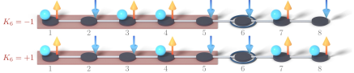

Advanced Quantum Materials 2027 · All lectures · Lecture notes
Session 7. Quantum Many-Body Entanglement and Tensor Networks
7.2 Fermions, spins and the Jordan-Wigner transformation
Before we build the tool, let us point out something that was present in the last sessions without being said explicitly. We have used two families of many-body Hamiltonians that look different. The first family is the fermionic Hamiltonians of the form (7.1), with a general two-body interaction \(V_{ijkl}\), where density-density interactions are only a special case, which we used in sessions 1 to 5. The second family is the spin Hamiltonians, mainly the Heisenberg model \(H = \sum_{ij} J_{ij}\, \mathbf{S}_i \cdot \mathbf{S}_j\), which we used for the magnons of session 6 and which we use again in this session for quantum spin liquids. These are not two different topics. They are the same physics written in two different languages, and in this section we make this translation precise.
Let us first look at a single site. A spinless fermionic site has a local Hilbert space of dimension two, empty or full, and a spin-1/2 site also has a local Hilbert space of dimension two, down or up. The first guess is \(c_i^\dagger \leftrightarrow S_i^+\) and \(c_i \leftrightarrow S_i^-\), and on a single site this guess is exactly right. However, it fails when we have more than one site, since fermion operators on different sites anticommute, while spin operators on different sites commute. As a result, the naive identification gives the wrong relative signs between sites. To fix this, we add to each site an extra phase that depends on the occupations. This phase is a “string” over all the sites to the left, chosen so that the exchange of two fermions gives the minus sign that the spin operators do not have by themselves. This mapping is called the Jordan-Wigner transformation, and it reads
\[S_i^+ = c_i^\dagger K_i, \qquad S_i^- = c_i K_i, \qquad S_i^z = n_i - \tfrac{1}{2}, \qquad K_i = \exp\!\left(i\pi \sum_{j<i} n_j\right), \tag{7.2}\]
where \(n_j = c_j^\dagger c_j\) is the fermion number operator on site \(j\). The string operator \(K_i\) is built only from the occupation numbers to the left of site \(i\). For this reason it commutes with all local operators on sites \(j \ge i\), and it counts, mod 2, how many fermions are to the left. We can check directly that (7.2), built in this way, gives the full \(SU(2)\) commutation algebra of spin-1/2 operators on every site and between every pair of sites. For this check we only need the fermionic anticommutation relations for \(c_i, c_i^\dagger\) and the string. In the lecture this is summarized as spin equals fermion times string, and this statement is correct. Figure 7.1 shows what the string does. It counts the fermions to the left of site \(i\) and gives their parity, so a change of a single occupation anywhere in that region changes the sign of \(S_i^+\).

This is the one explicit link in the course between the two languages that we have used. The fermionic operators of sessions 1 to 5 and the spin operators of session 6 and, as we will see, of session 8 are related by (7.2), and they are not only analogous to each other. It also explains a practical choice that we make for the rest of this session. Since interacting fermionic Hamiltonians and interacting spin Hamiltonians are mathematically equivalent, we can work only in the spin representation from now on, and we will do so. The reason is that spin operators on different sites commute, so there is no fermionic sign to keep track of when we cut the chain, and this makes the counting of entanglement below clean.